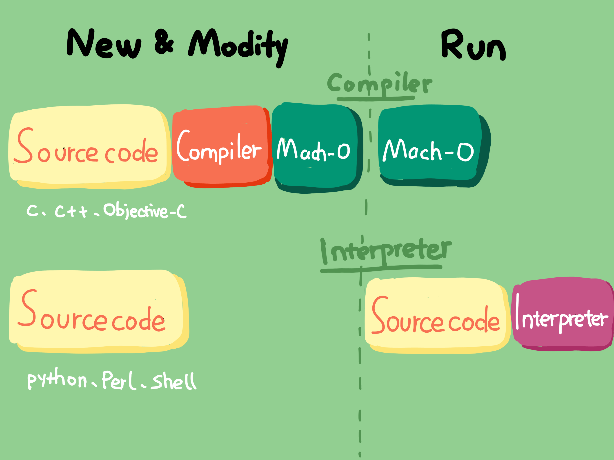
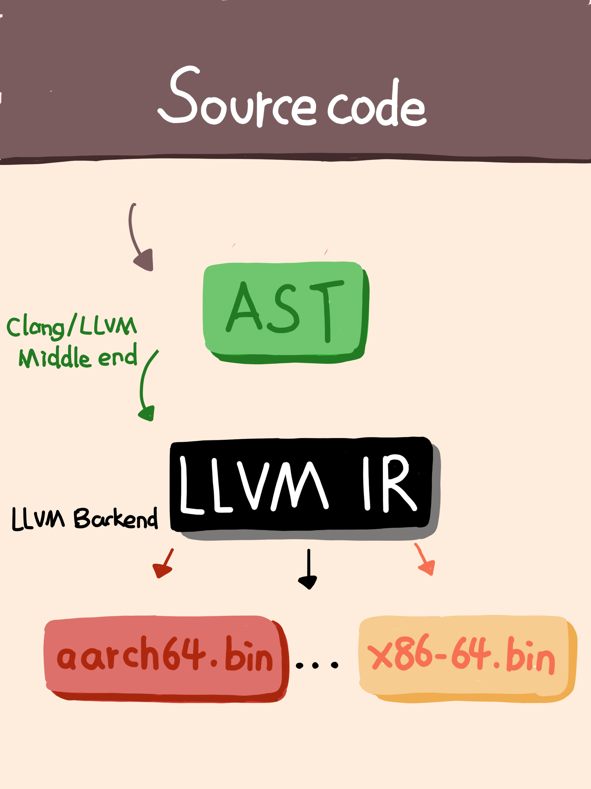
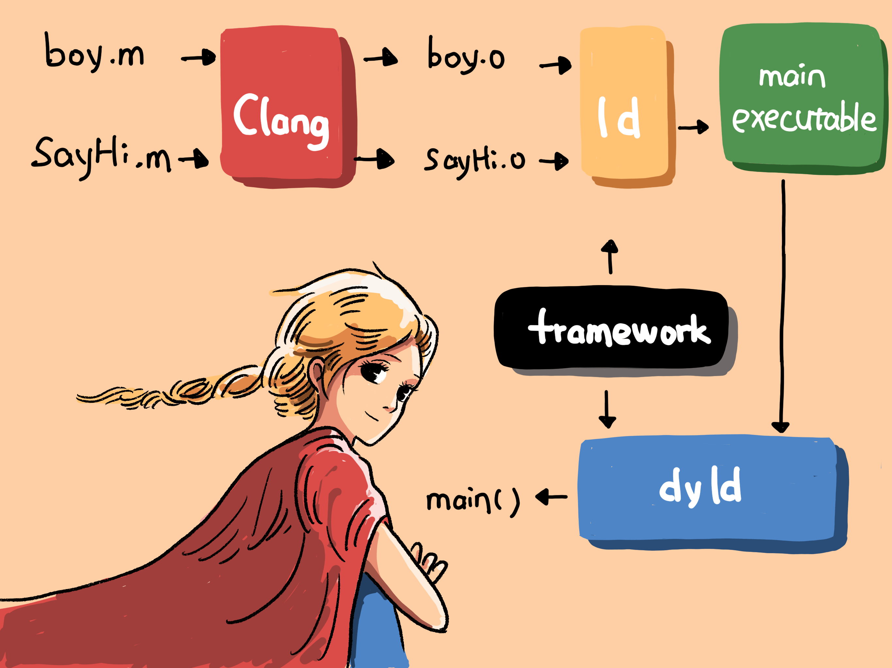

- 00 开篇词 锚定一个点，然后在这个点上深耕.md.html
- 01 建立你自己的iOS开发知识体系.md.html
- 02 App 启动速度怎么做优化与监控？.md.html
- 03 Auto Layout 是怎么进行自动布局的，性能如何？.md.html
- 04 项目大了人员多了，架构怎么设计更合理？.md.html
- 05 链接器：符号是怎么绑定到地址上的？.md.html
- 06 App 如何通过注入动态库的方式实现极速编译调试？.md.html
- 07 Clang、Infer 和 OCLint ，我们应该使用谁来做静态分析？.md.html
- 08 如何利用 Clang 为 App 提质？.md.html
- 09 无侵入的埋点方案如何实现？.md.html
- 10 包大小：如何从资源和代码层面实现全方位瘦身？.md.html
- 11 热点问题答疑（一）：基础模块问题答疑.md.html
- 12 iOS 崩溃千奇百怪，如何全面监控？.md.html
- 13 如何利用 RunLoop 原理去监控卡顿？.md.html
- 14 临近 OOM，如何获取详细内存分配信息，分析内存问题？.md.html
- 15 日志监控：怎样获取 App 中的全量日志？.md.html
- 16 性能监控：衡量 App 质量的那把尺.md.html
- 17 远超你想象的多线程的那些坑.md.html
- 18 怎么减少 App 电量消耗？.md.html
- 19 热点问题答疑（二）：基础模块问题答疑.md.html
- 20 iOS开发的最佳学习路径是什么？.md.html
- 21 除了 Cocoa，iOS还可以用哪些 GUI 框架开发？.md.html
- 22 细说 iOS 响应式框架变迁，哪些思想可以为我所用？.md.html
- 23 如何构造酷炫的物理效果和过场动画效果？.md.html
- 24 A_B 测试：验证决策效果的利器.md.html
- 25 怎样构建底层的发布和订阅事件总线？.md.html
- 26 如何提高 JSON 解析的性能？.md.html
- 27 如何用 Flexbox 思路开发？跟自动布局比，Flexbox 好在哪？.md.html
- 28 怎么应对各种富文本表现需求？.md.html
- 29 如何在 iOS 中进行面向测试驱动开发和面向行为驱动开发？.md.html
- 30 如何制定一套适合自己团队的 iOS 编码规范？.md.html
- 31 iOS 开发学习资料和书单推荐.md.html
- 32 热点问题答疑（三）.md.html
- 33 iOS 系统内核 XNU：App 如何加载？.md.html
- 34 iOS 黑魔法 Runtime Method Swizzling 背后的原理.md.html
- 35 libffi：动态调用和定义 C 函数.md.html
- 36 iOS 是怎么管理内存的？.md.html
- 37 如何编写 Clang 插件？.md.html
- 38 热点问题答疑（四）.md.html
- 39 打通前端与原生的桥梁：JavaScriptCore 能干哪些事情？.md.html
- 40 React Native、Flutter 等，这些跨端方案怎么选？.md.html
- 41 原生布局转到前端布局，开发思路有哪些转变？.md.html
- 42 iOS原生、大前端和Flutter分别是怎么渲染的？.md.html
- 43 剖析使 App 具有动态化和热更新能力的方案.md.html
- 用户故事 我是如何学习这个专栏的？.md.html
- 结束语 慢几步，深几度.md.html
- 捐赠
05 链接器：符号是怎么绑定到地址上的？
你好，我是戴铭。
你是不是经常会好奇自己参与的这么些项目，为什么有的编译起来很快，有的却很慢；编译完成后，有的启动得很快，有的却很慢。其实，在理解了编译和启动时链接器所做的事儿之后，你就可以从根儿上找到这些问题的答案了。
所以，在今天这篇文章中，我就重点和你讲解一下链接器相关的知识。简单地说，链接器最主要的作用，就是将符号绑定到地址上。理解了这其中的原理后，你就可以有针对性地去调整和优化项目了。
同时，掌握了链接器的作用，也将有助于你理解后面文章中，关于符号表、加载相关的内容。
现在，我们就从 iOS 开发的起点，也就是编写代码和编译代码开始说起，看看链接器在这其中到底发挥了什么作用。
iOS开发为什么使用的是编译器？
我们都知道，iOS 编写的代码是先使用编译器把代码编译成机器码，然后直接在 CPU 上执行机器码的。之所以不使用解释器来运行代码，是因为苹果公司希望 iPhone 的执行效率更高、运行速度能达到最快。
那为什么说用解释器运行代码的速度不够快呢？这是因为解释器会在运行时解释执行代码，获取一段代码后就会将其翻译成目标代码（就是字节码（Bytecode）），然后一句一句地执行目标代码。
也就是说，解释器，是在运行时才去解析代码，这样就比在运行之前通过编译器生成一份完整的机器码再去执行的效率要低。
这时你一定会纳闷了，既然编译器效率这么高，那为什么还有人用解释器呢？所谓事有利弊，解释器可以在运行时去执行代码，说明它具有动态性，程序运行后能够随时通过增加和更新代码来改变程序的逻辑。
也就是说，你写的程序跑起来后不用重新启动，就可以看到代码修改后的效果，这样就缩短了调试周期。程序发布后，你还可以随时修复问题或者增加新功能，用户也不用一定要等到发布新版本后才可以升级使用。所以说，使用解释器可以帮我们缩短整个程序的开发周期和功能更新周期。
那么，使用编译器和解释器执行代码的特点，我们就可以概括如下：
采用编译器生成机器码执行的好处是效率高，缺点是调试周期长。
解释器执行的好处是编写调试方便，缺点是执行效率低。
编译器和解释器的比较图示如下：

图1 编译器和执行器的对比
明确了iOS开发使用编译器的原因以后，你还需要了解 iOS 开发使用的到底是什么编译器。
现在苹果公司使用的编译器是LLVM，相比于Xcode 5版本前使用的GCC，编译速度提高了3倍。同时，苹果公司也反过来主导了 LLVM 的发展，让 LLVM 可以针对苹果公司的硬件进行更多的优化。
总结来说，LLVM 是编译器工具链技术的一个集合。而其中的lld 项目，就是内置链接器。编译器会对每个文件进行编译，生成 Mach-O（可执行文件）；链接器会将项目中的多个 Mach-O文件合并成一个。
LLVM 的编译过程非常复杂。如果你有兴趣的话，可以通过官方手册查看完整的编译过程。
这里，我先简单为你总结下编译的几个主要过程：
首先，你写好代码后，LLVM 会预处理你的代码，比如把宏嵌入到对应的位置。
预处理完后，LLVM会对代码进行词法分析和语法分析，生成 AST 。AST 是抽象语法树，结构上比代码更精简，遍历起来更快，所以使用 AST 能够更快速地进行静态检查，同时还能更快地生成 IR（中间表示）。
最后 AST 会生成 IR，IR 是一种更接近机器码的语言，区别在于和平台无关，通过 IR 可以生成多份适合不同平台的机器码。对于 iOS 系统，IR 生成的可执行文件就是 Mach-O。
下图展示了编译的主要过程。

图2 编译的主要过程
编译时链接器做了什么？
Mach-O 文件里面的内容，主要就是代码和数据：代码是函数的定义；数据是全局变量的定义，包括全局变量的初始值。不管是代码还是数据，它们的实例都需要由符号将其关联起来。
为什么呢？因为Mach-O 文件里的那些代码，比如 if、for、while 生成的机器指令序列，要操作的数据会存储在某个地方，变量符号就需要绑定到数据的存储地址。你写的代码还会引用其他的代码，引用的函数符号也需要绑定到该函数的地址上。
而链接器的作用，就是完成变量、函数符号和其地址绑定这样的任务。而这里我们所说的符号，就可以理解为变量名和函数名。
那为什么要让链接器做符号和地址绑定这样一件事儿呢？不绑定的话，又会有什么问题？
如果地址和符号不做绑定的话，要让机器知道你在操作什么内存地址，你就需要在写代码时给每个指令设好内存地址。写这样的代码的过程，就像你直接在和不同平台的机器沟通，连编译生成 AST 和 IR 的步骤都省掉了，甚至优化平台相关的代码都需要你自己编写。
这件事儿看起来挺酷，但可读性和可维护性都会很差，比如修改代码后对地址的维护就会让你崩溃。而这种“崩溃”的罪魁祸首就是代码和内存地址绑定得太早。
另外，绑定得太早除了可读性和可维护性差之外，还会有更多的重复工作。因为，你需要针对不同的平台写多份代码，而这些代码本可以通过高级语言一次编译成多份。既然这样，那我们应该怎么办呢？
我们首先想到的就是，用汇编语言来让这种绑定滞后。随着编程语言的进化，我们很快就发现，采用任何一种高级编程语言，都可以解决代码和内存绑定过早产生的问题，同时还能扫掉使用汇编写程序的烦恼。
现在，我们已经通过反证法，理解了在一个文件里把符号和地址绑定在一起的必要性。接下来，我们再看看链接器为什么还要把项目中的多个 Mach-O文件合并成一个。
其实，这个问题也好回答。
你肯定不希望一个项目是在一个文件里从头写到尾的吧。项目中文件之间的变量和接口函数都是相互依赖的，所以这时我们就需要通过链接器将项目中生成的多个 Mach-O 文件的符号和地址绑定起来。
没有这个绑定过程的话，单个文件生成的 Mach-O 文件是无法正常运行起来的。因为，如果运行时碰到调用在其他文件中实现的函数的情况时，就会找不到这个调用函数的地址，从而无法继续执行。
链接器在链接多个目标文件的过程中，会创建一个符号表，用于记录所有已定义的和所有未定义的符号。链接时如果出现相同符号的情况，就会出现“ld: dumplicate symbols”的错误信息；如果在其他目标文件里没有找到符号，就会提示“Undefined symbols”的错误信息。
说完了链接器解决的问题，我们再一起来看看链接器对代码主要做了哪几件事儿。
去项目文件里查找目标代码文件里没有定义的变量。
扫描项目中的不同文件，将所有符号定义和引用地址收集起来，并放到全局符号表中。
计算合并后长度及位置，生成同类型的段进行合并，建立绑定。
对项目中不同文件里的变量进行地址重定位。
你在项目里为某项需求写了一些功能函数，但随着业务的发展，一些功能被下掉了或者被其他负责的同事在另一个文件里用其他函数更新了功能。那么这时，你以前写的那些函数就没有用武之地了。日长月久，无用的函数越来越多，生成的 Mach-O 文件也就越来越大。
这时，链接器在整理函数的符号调用关系时，就可以帮你理清有哪些函数是没被调用的，并自动去除掉。那这是怎么实现的呢？
链接器在整理函数的调用关系时，会以main函数为源头，跟随每个引用，并将其标记为live。跟随完成后，那些未被标记live的函数，就是无用函数。然后，链接器可以通过打开 Dead code stripping 开关，来开启自动去除无用代码的功能。并且，这个开关是默认开启的。
说完了编译时链接器的基本功能，接下来我们再说一说动态库链接，这也是链接器的一大作用。
动态库链接
在真实的 iOS 开发中，你会发现很多功能都是现成可用的，不光你能够用，其他App 也在用，比如 GUI 框架、I/O、网络等。链接这些共享库到你的 Mach-O 文件，也是通过链接器来完成的。
链接的共用库分为静态库和动态库：静态库是编译时链接的库，需要链接进你的 Mach-O 文件里，如果需要更新就要重新编译一次，无法动态加载和更新；而动态库是运行时链接的库，使用 dyld 就可以实现动态加载。
Mach-O 文件是编译后的产物，而动态库在运行时才会被链接，并没参与 Mach-O文件的编译和链接，所以 Mach-O文件中并没有包含动态库里的符号定义。也就是说，这些符号会显示为“未定义”，但它们的名字和对应的库的路径会被记录下来。运行时通过 dlopen 和 dlsym 导入动态库时，先根据记录的库路径找到对应的库，再通过记录的名字符号找到绑定的地址。
dlopen 会把共享库载入运行进程的地址空间，载入的共享库也会有未定义的符号，这样会触发更多的共享库被载入。dlopen 也可以选择是立刻解析所有引用还是滞后去做。dlopen 打开动态库后返回的是引用的指针，dlsym 的作用就是通过 dlopen 返回的动态库指针和函数符号，得到函数的地址然后使用。
使用dyld加载动态库，有两种方式：有程序启动加载时绑定和符号第一次被用到时绑定。为了减少启动时间，大部分动态库使用的都是符号第一次被用到时再绑定的方式。
加载过程开始会修正地址偏移，iOS 会用 ASLR 来做地址偏移避免攻击，确定 Non-Lazy Pointer 地址进行符号地址绑定，加载所有类，最后执行 load 方法和 Clang Attribute 的 constructor 修饰函数。
每个函数、全局变量和类都是通过符号的形式定义和使用的，当把目标文件链接成一个 Mach-O文件时，链接器在目标文件和动态库之间对符号做解析处理。
下面，我们就通过一个例子来看看 dyld 的链接过程。
第一步：先编写多个文件。
Boy.h
c
#import <Foundation/Foundation.h>
@interface Boy : NSObject
- (void)say;
@end
Boy.m
c
#import “Boy.h”
@implementation Boy
- (void)say
{
NSLog(@“hi there again!\n”);
}
@end
SayHi.m
c
#import “Boy.h”
int main(int argc, char *argv[])
{
@autoreleasepool {
Boy *boy = [[Boy alloc] init];
[boy say];
return 0;
}
}
第二步：编译多个文件。
xcrun clang -c Boy.m
xcrun clang -c SayHi.m
第三步：将编译后的文件链接起来，这样就可以生成 a.out 可执行文件了。
备注：a.out是编译器的默认名字。
xcrun clang SayHi.o Boy.o -Wl,`xcrun —show-sdk-path`/System/Library/Frameworks/Foundation.framework/Foundation
符号表会规定它们的符号，你可以使用 nm 工具查看。
我们先用nm工具看一下SayHi.o文件：
xcrun nm -nm SayHi.o
(undefined) external _OBJC_CLASS_$_Boy
(undefined) external _objc_autoreleasePoolPop
(undefined) external _objc_autoreleasePoolPush
(undefined) external _objc_msgSend
0000000000000000 (__TEXT,__text) external _main
_OBJC_CLASS_$_Boy ，表示 Boy 的 OC 符号。
(undefined) external ，表示未实现非私有。如果是私有的话，就是 non-external。
external _main ，表示 main() 函数，处理 0 地址，记录在 __TEXT,__text 区域里。
接下来，我们再看看 Boy.o文件：
xcrun nm -nm Boy.o
(undefined) external _NSLog
(undefined) external _OBJC_CLASS_$_NSObject
(undefined) external _OBJC_METACLASS_$_NSObject
(undefined) external ___CFConstantStringClassReference
(undefined) external __objc_empty_cache
0000000000000000 (__TEXT,__text) non-external -[Boy say]
0000000000000060 (__DATA,__objc_const) non-external l_OBJC_METACLASS_RO_$_Boy
00000000000000a8 (__DATA,__objc_const) non-external l_OBJC_$_INSTANCE_METHODS_Boy
00000000000000c8 (__DATA,__objc_const) non-external l_OBJC_CLASS_RO_$_Boy
0000000000000110 (__DATA,__objc_data) external _OBJC_METACLASS_$_Boy
0000000000000138 (__DATA,__objc_data) external _OBJC_CLASS_$_Boy
因为 undefined 符号表示的是该文件类未定义，所以在目标文件和 Foundation framework 动态库做链接处理时，链接器会尝试解析所有的 undefined 符号。
链接器通过动态库解析成符号会记录是通过哪个动态库解析的，路径也会一起记录下来。你可以再用 nm 工具查看 a.out 符号表，对比 boy.o 的符号表，看看链接器是怎么解析符号的。
xcrun nm -nm a.out
(undefined) external _NSLog (from Foundation)
(undefined) external _OBJC_CLASS_$_NSObject (from CoreFoundation)
(undefined) external _OBJC_METACLASS_$_NSObject (from CoreFoundation)
(undefined) external ___CFConstantStringClassReference (from CoreFoundation)
(undefined) external __objc_empty_cache (from libobjc)
(undefined) external _objc_autoreleasePoolPop (from libobjc)
(undefined) external _objc_autoreleasePoolPush (from libobjc)
(undefined) external _objc_msgSend (from libobjc)
(undefined) external dyld_stub_binder (from libSystem)
0000000100000000 (__TEXT,__text) [referenced dynamically] external __mh_execute_header
0000000100000e90 (__TEXT,__text) external _main
0000000100000f10 (__TEXT,__text) non-external -[Boy say]
0000000100001130 (__DATA,__objc_data) external _OBJC_METACLASS_$_Boy
0000000100001158 (__DATA,__objc_data) external _OBJC_CLASS_$_Boy
进行对比的时候，我们可以重点关注哪些 undefined 的符号，有了更多信息，就可以知道在哪个动态库能够找到它。
我们可以通过 otool工具来找到符号所需库在哪儿。
xcrun otool -L a.out
a.out:
/System/Library/Frameworks/Foundation.framework/Versions/C/Foundation (compatibility version 300.0.0, current version 1349.25.0)
/usr/lib/libSystem.B.dylib (compatibility version 1.0.0, current version 1238.0.0)
/System/Library/Frameworks/CoreFoundation.framework/Versions/A/CoreFoundation (compatibility version 150.0.0, current version 1348.28.0)
/usr/lib/libobjc.A.dylib (compatibility version 1.0.0, current version 228.0.0)
从otool 工具输出的结果可以看到，这些 undefined 符号需要的两个库分别是 libSystem 和 libobjc。查看 libSystem库的话，你可以看到常用的 GCD 的 libdispatch，还有 Block 的 libsystem_blocks。
dylib 这种格式，表示是动态链接的，编译的时候不会被编译到执行文件中，在程序执行的时候才 link，这样就不用算到包大小里，而且不更新执行程序就能够更新库。
我们可以打印看看什么库被加载了：
(export DYLD_PRINT_LIBRARIES=; ./a.out )
dyld: loaded: /Users/didi/Downloads/./a.out
dyld: loaded: /System/Library/Frameworks/Foundation.framework/Versions/C/Foundation
dyld: loaded: /usr/lib/libSystem.B.dylib
dyld: loaded: /System/Library/Frameworks/CoreFoundation.framework/Versions/A/CoreFoundation
…
数一下，被加载的库还挺多的。
因为 Foundation 还会依赖一些其他动态库，这些依赖的其他库还会再依赖更多的库，所以相互依赖的符号会很多，需要处理的时间也会比较长。
这里系统上的动态链接器会使用共享缓存，共享缓存在 /var/db/dyld/。当加载 Mach-O 文件时，动态链接器会先检查是否有共享缓存。每个进程都会在自己的地址空间映射这些共享缓存，这样做可以起到优化App启动速度的作用。
而关于动态链接器的作用顺序是怎样的，你可以先看看 Mike Ash 写的这篇关于 dyld 的博客： Dynamic Linking On OS X。这篇博客里面，很详细地讲解了 dyld 所做的事情。
简单来说， dyld做了这么几件事儿：
先执行 Mach-O文件，根据 Mach-O文件里 undefined 的符号加载对应的动态库，系统会设置一个共享缓存来解决加载的递归依赖问题；
加载后，将 undefined 的符号绑定到动态库里对应的地址上；
最后再处理 +load 方法，main 函数返回后运行 static terminator。
调用 +load 方法是通过 runtime 库处理的。你可以通过一个可编译的开源 runtime 库来了解 runtime，从源码层面去看程序启动时 runtime 做了哪些事情。在 debug-objc 下创建一个类，在 +load 方法里断点查看走到这里调用的堆栈如下：
0 +[someclass load]
1 call_class_loads()
2 ::call_load_methods
3 ::load_images(const char *path __unused, const struct mach_header *mh)
4 dyld::notifySingle(dyld_image_states, ImageLoader const*, ImageLoader::InitializerTimingList*)
11 _dyld_start
在 load_images 方法里断点 p path 可以打印出所有加载的动态链接库，这个方法的 hasLoadMethods 用于快速判断是否有 +load 方法。
prepare_load_methods 这个方法会获取所有类的列表然后收集其中的 +load 方法，在代码里可以发现 Class 的 +load 是先执行的，然后执行 Category 。
为什么这样做呢？我们通过 prepare_load_methods 这个方法可以看出，在遍历 Class 的 +load 方法时会执行 schedule_class_load 方法，这个方法会递归到根节点来满足 Class 收集完整关系树的需求。
最后， call_load_methods 会创建一个 autoreleasePool 使用函数指针来动态调用类和 Category 的 +load 方法。
如果你想了解 Cocoa 的 Foundation 库的话，可以通过 GNUStep 源码来学习。比如 ，NSNotificationCenter 发送通知是按什么顺序发送的，你可以查看 NSNotificationCenter.m 里的 addObserver 方法和 postNotification 方法，看看观察者是怎么添加的，以及是怎么被遍历通知到的。
最后说一句，dyld 是开源的，地址是：https://github.com/opensource-apple/dyld
小结
今天这篇文章，我与你介绍了链接器是什么，为什么需要链接器，以及链接器在编译时和程序启动时会做的事情。总体来看，从编译、链接、执行、动态库加载到 main 函数开始执行的过程如下图所示。
- 编译阶段由于有了链接器，你的代码可以写在不同的文件里，每个文件都能够独立编成 Mach-O 文件进行标记。编译器可以根据你修改的文件范围来减少编译，通过这种方式提高每次编译的速度。
了解了这种链接机制，你也能够明白，文件越多，链接器链接 Mach-O文件所需绑定的遍历操作就会越多，编译速度也会越慢。
了解程序运行阶段的动态库链接原理，会让你更多地了解程序在启动时做的事情，同时还能够对你有一些启发。
比如，在开发调试阶段，是不是代码改完以后可以先不去链接项目里的所有文件，只编译当前修改的文件动态库，通过运行时加载动态库及时更新，看到修改的结果。这样调试的速度，不就能够得到质的提升了么。而具体怎么做，我会在第6篇文章“App 如何通过注入动态库的方式实现极速编译调试？”中和你详细说明。
再比如，你可以逆向找出其他 App 里你感兴趣功能的使用方法，然后在自己的程序里直接调用它，最后将那个 App 作为动态库加载到自己的 App 里。这样，你感兴趣的这个功能，就能够在你自己的程序里起作用了。
其实，使用链接器不仅能提高开发效率，还可以让你发挥想象力再去做些其他有趣的事情。
课后小作业
请你写一段代码，在 App 运行时通过 dlopen 和 dlsym 链接加载 bundle 里的动态库。
感谢你的收听，欢迎你在评论区给我留言分享你的观点，也欢迎把它分享给更多的朋友一起阅读。
最近，我收到一些同学的反馈，说这门课的一些内容比较深，一时难以琢磨透。如果你也有这样的感受，推荐你学习极客时间刚刚上新的另一门视频课程：由腾讯高级工程师朱德权，主讲的《从 0 开发一款 iOS App》。
朱德权老师将会基于最新技术，从实践出发，手把手带你构建类今日头条的App。要知道，那些很牛的 iOS 开发者，往往都具备独立开发一款 App 的能力。
这门课正在上新优惠，欢迎点击这里试看。
© 2019 - 2023 Liangliang Lee. Powered by gin and hexo-theme-book.